Basic Fixed-Wing Example¶
A complete walkthrough for a motor + 2 ailerons + 2 flaps + elevator + rudder airplane, one servo per surface, built end to end with the wizard. Complete Initial Radio Setup first.
Step 1. Confirm system settings¶
This example uses the default AETR channel order.
Step 2. Identify the servos/channels required¶
Mixes is the heart of the radio — up to 100 mix channels, normally with the lowest numbers assigned to servos (since channel numbers map directly onto receiver channels; the X20 internal RF module supports up to 24 output channels). Higher channels are free for virtual channels or additional real channels via multiple RF modules and SBus. Our airframe:
| Function | Channels |
|---|---|
| Motor | 1 |
| Ailerons | 2 |
| Flaps | 2 |
| Elevator | 1 |
| Rudder | 1 |
(Retracts are added later, in Step 10.)
Step 3. Create a new model¶

From Model Select, pick a category, tap +, and start the Airplane wizard. Choose Non stabilized receiver for this example.


Accept 1 engine channel, then 2 aileron channels and select 2 flap channels.
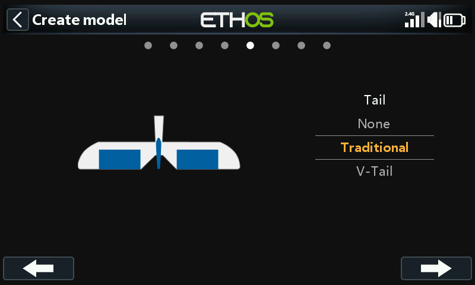
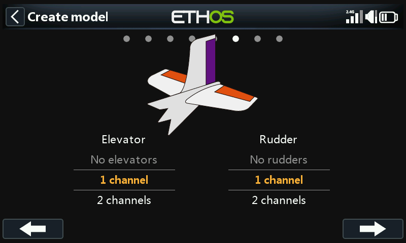
Accept the default Traditional Tail, with 1 elevator and 1 rudder channel.
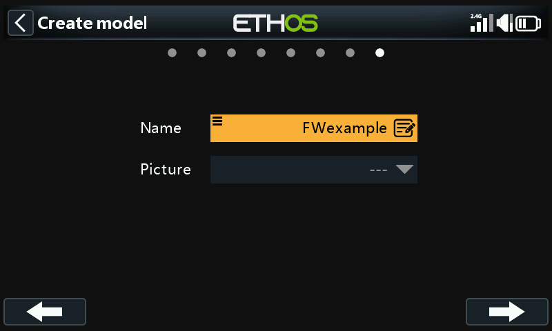

Name it (e.g. "FWexample" — up to 15 characters), finish the wizard, and it becomes the active model, created in the Airplane category.
Step 4. Review and configure the mixes¶
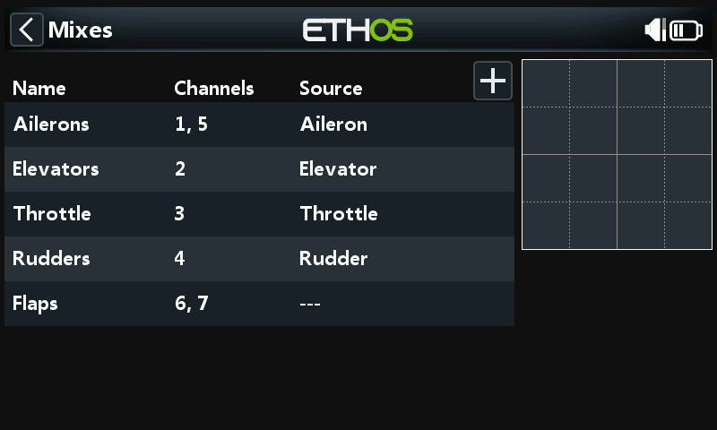
The wizard has already built ailerons (channels 1 and 5), elevator,
throttle, rudder, and flap mixes (flaps show --- — no source assigned
yet).
Ailerons¶
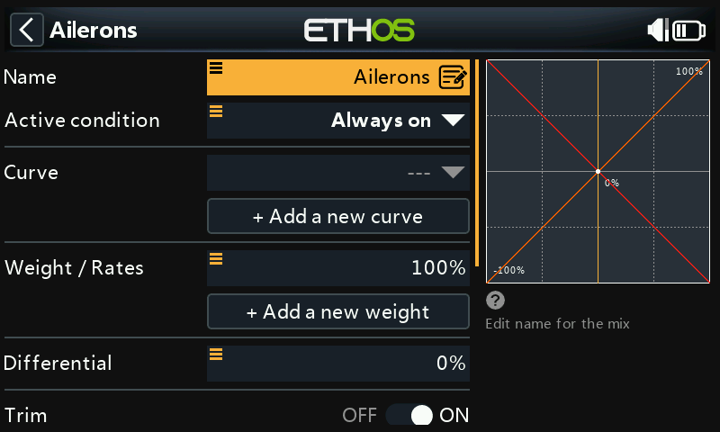

Weight/Rates — set up rates before flying anything new: modest travel (e.g. 30%) suits sport flying, full 100% suits 3D. Add a 60% rate for switch SB mid, and a 30% rate for SB down — the default (SB up) stays 100%:
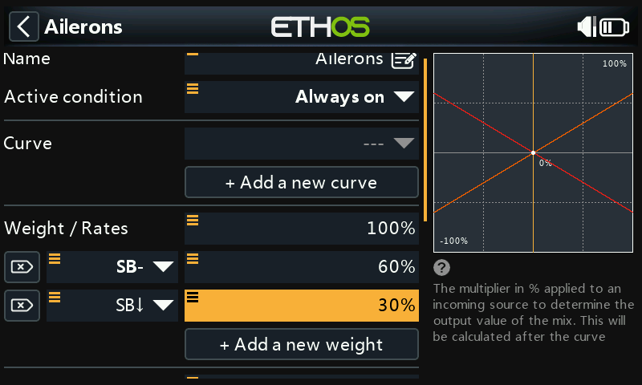
Expo — a linear response can feel twitchy around center; add Expo rates (e.g. 60%/40%/20% across the same SB positions) to flatten the response near center without reducing max throw:

Differential — equal up/down aileron throw causes more drag on the downward-moving aileron than the upward one, yawing the model away from the turn ("adverse yaw"). A positive differential (50% is common) reduces downward throw relative to upward to counter this:
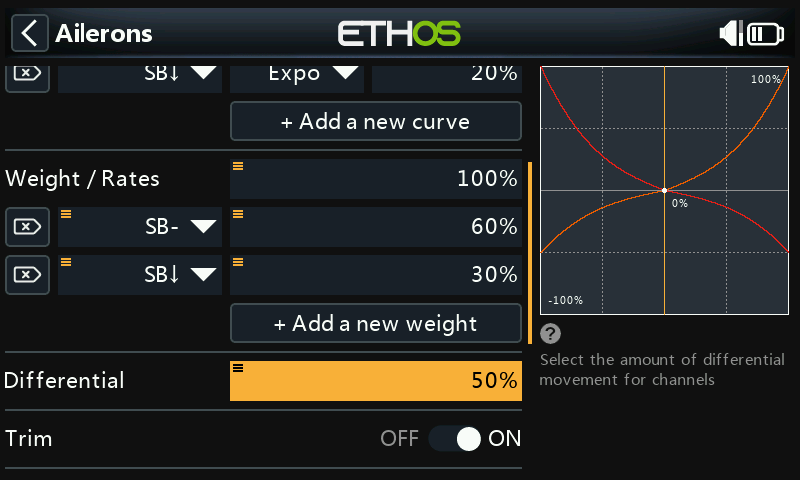
To tune differential in flight, long-press ENT on the value, Use a
source, and pick Pot1:
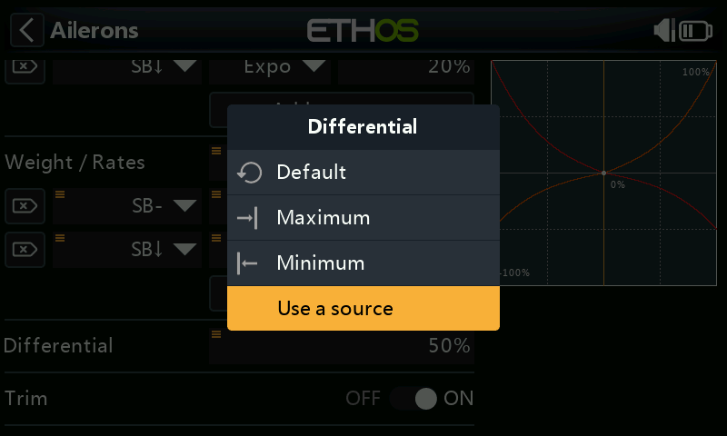
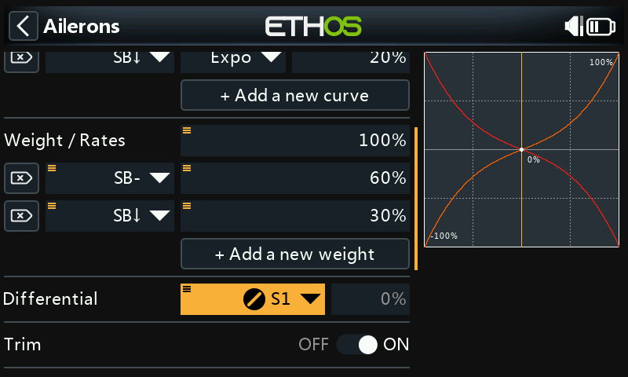
Once happy with the in-flight value, long-press again and Convert to value to lock it in permanently:
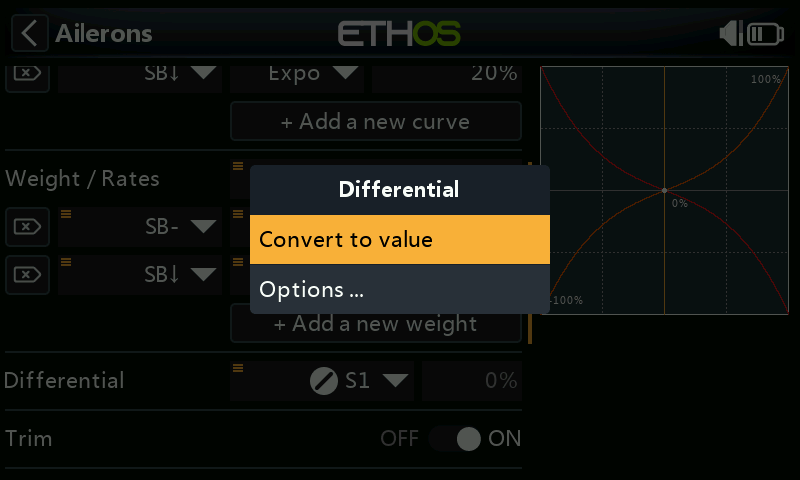
Trim — can disconnect this mix from its associated trim without disabling the trim itself, freeing it for another purpose:
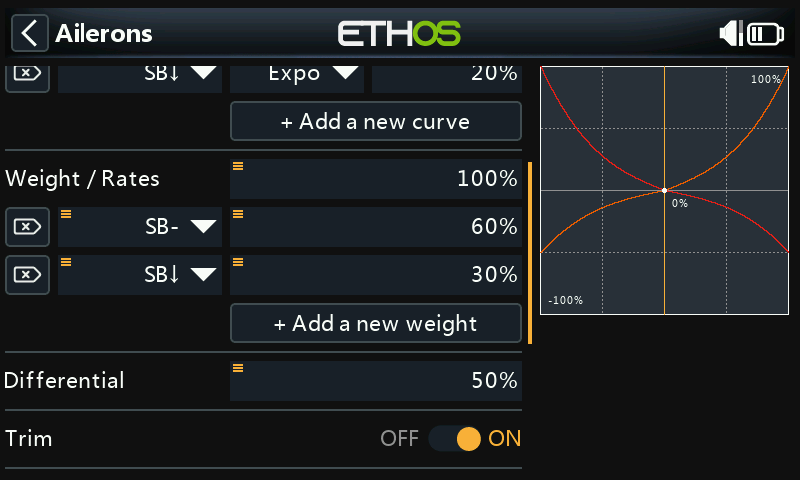
Elevator and rudder¶
The same triple-rate + Expo pattern, here on switch SC:
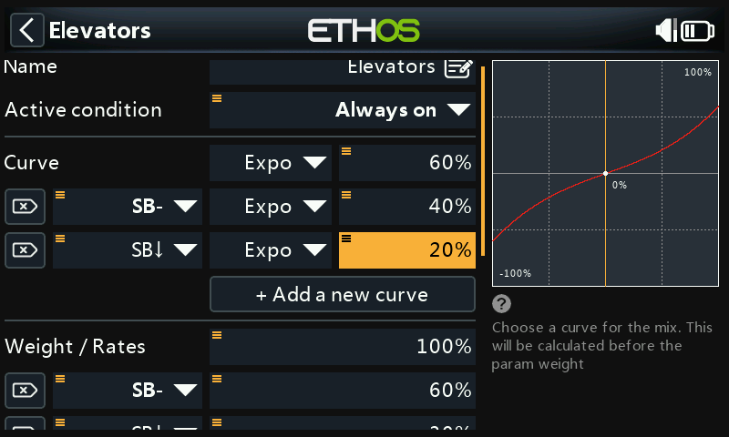
Throttle¶

Leave the input on the throttle stick — no rates/Expo needed — but a safety switch is essential; a model engine or motor starting unexpectedly can cause serious injury.
Low position trim (glow/gas engines) — adjusts idle speed independently of full throttle:
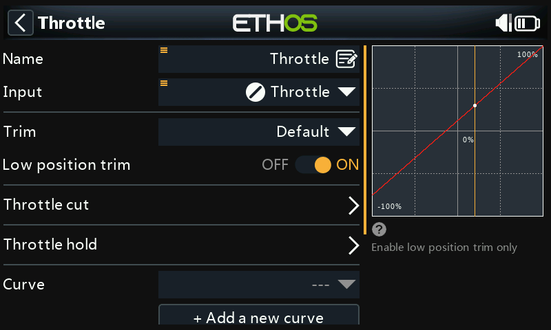
With it enabled, the throttle channel sits at −75% with the stick at idle; the throttle trim lever then adjusts idle between −100% and −50%.
Throttle cut — a safety latch. With switch SA down as the active condition (shown bold when active), throttle output holds at −100% once the stick drops below −85%:
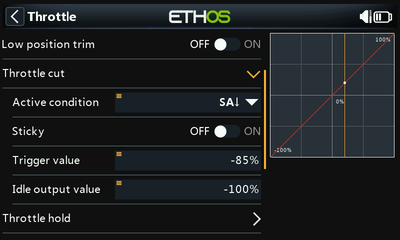
With Sticky enabled instead, throttle cuts the instant SA goes down, regardless of stick position:
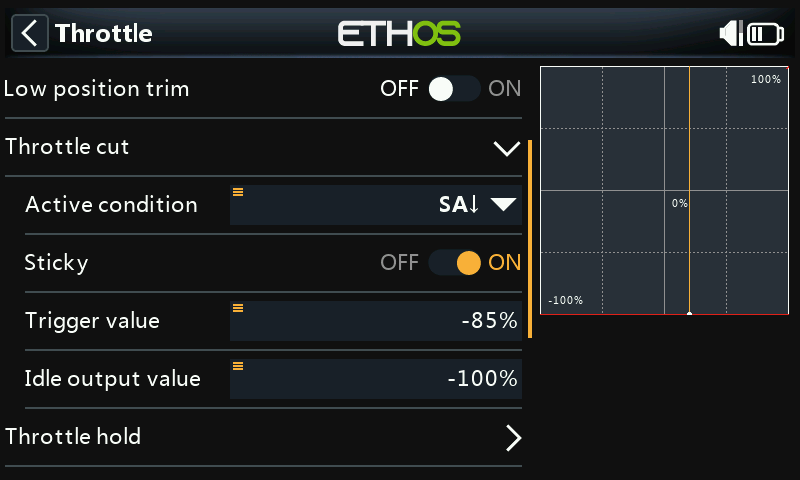
Either way, once the active condition clears, the stick must be brought back below −85% before throttle can increase again — preventing the motor jumping to a high-throttle position the moment the cut switch is released.
Throttle hold — an emergency cut from any stick position, dropping output straight to −100% (or a configured value) the instant its condition is met:
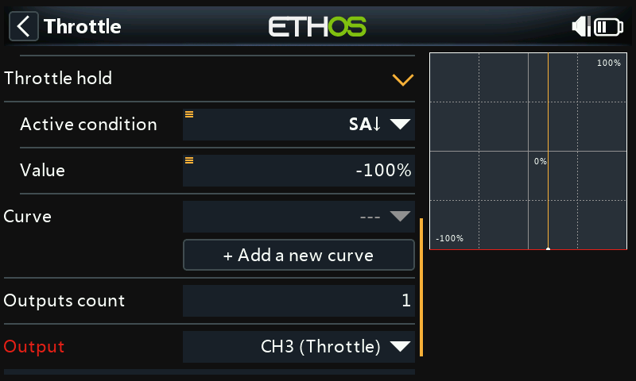
Flaps¶
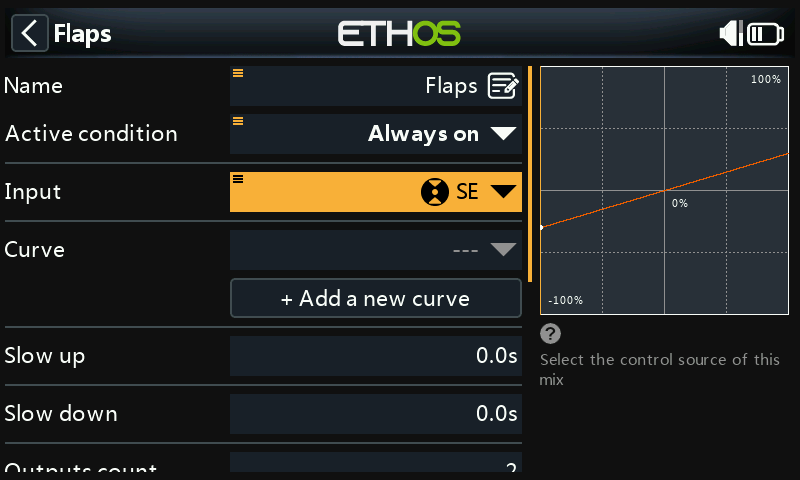
Assign flaps to switch SE, and set both output channel weights to 100%:
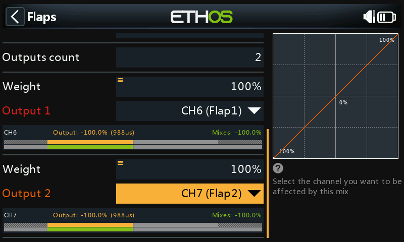
Step 5. Bind the receiver¶
Register (if ACCESS) and bind via RF System. Before proceeding to Outputs, consider disconnecting servo linkages or reducing servo travel temporarily, to avoid over-driving anything while setting Min/Max limits.
Step 6. Configure the outputs¶

Outputs adapts the mixer's logic to the model's actual mechanics.
Aileron 1 — center the servo with PWM center after optimizing the mechanical linkage, then set Min/Max. Temporarily assigning a pot to Min (then Max, the same way as the differential example above) makes this faster to dial in:
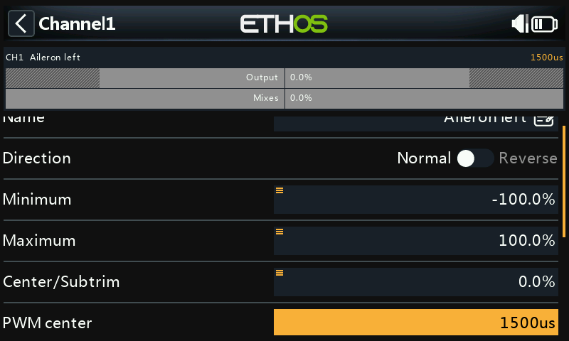
Flaps — flaps usually need a large downward deflection for effective braking; sacrificing some upward travel in the linkage to get it, so the flap sits half-down at servo center, then using Min/Max to set the actual up and full-down positions. A 5-point curve is a common way to correct any resulting flap/aileron tracking mismatch. Finish with Balance channels to synchronize left/right ailerons and flaps.
Step 7. Introduction to flight modes¶
Flight modes let a model carry per-task settings — like changing gears. Of the 20 available, this example uses three: Default, Flaps Half (switch SE mid), and Flaps Full (SE up). The first flight mode with its condition true is active; the Default mode has no condition at all, and takes over whenever nothing else applies — which is why it has no switch selection option. A 1-second fade in/out smooths the transition as flaps deploy.
Step 8. Configure the trims¶
Two ways to handle elevator trim varying with flap position:
Independent trims per flight mode — the simplest option: elevator trim becomes fully independent per flight mode, switching automatically as SE moves. Since each mode trims from scratch, Instant trim helps — trim for normal flight first, then land and use that as a starting point for the flap modes.
Base trim with offset — trim once in Default, with each flap mode's elevator compensation layered on top as an offset:
- Set trim Step to Medium (for faster initial trimming; reduce later for fine tuning), Mode to Custom, and add a new behavior.
- Active condition:
FM1(Flaps Half), mode Offset + Default — the Flaps Half trim becomes base trim + whatever offset is dialed in while that mode is active:

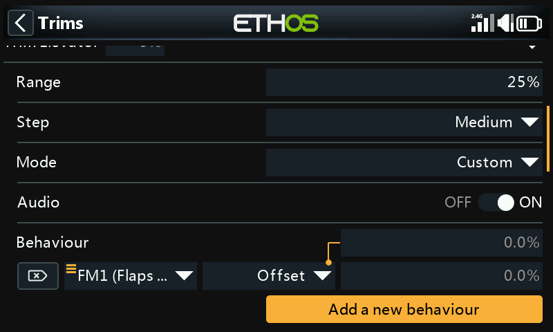
- Repeat for
FM2(Flaps Full):

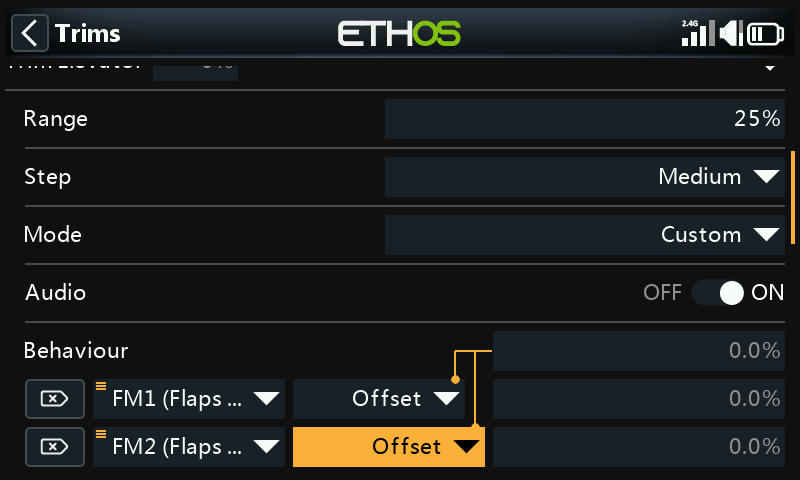
Each flap mode can now be trimmed independently, but adjusting the base Default trim later (e.g. to correct servo thermal drift) shifts both flap-mode trims by the same amount automatically.

Step 9. Set up a flight battery timer¶
In Timers, edit Timer 1: Down mode, 5 minute start value, running whenever Throttle active is true (and not held in reset). Optionally assign a proportional timing source (e.g. throttle stick) so the timer runs at real-time speed at full throttle and slows as throttle is reduced.
Step 10. Add a mix for retracts¶
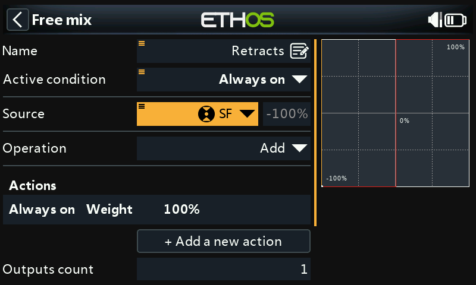
Tap a mix, Add Mix → Free Mix, name it "Retracts", set condition Always, and source to switch SF. The default Weight = 100% action is fine — this allocates, e.g., channel 8 to the retracts:
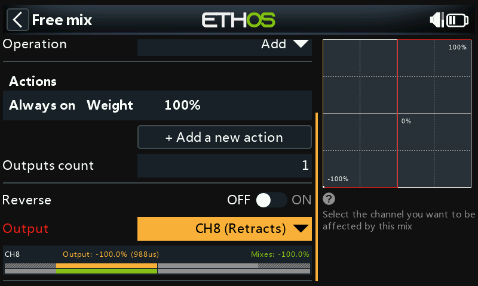